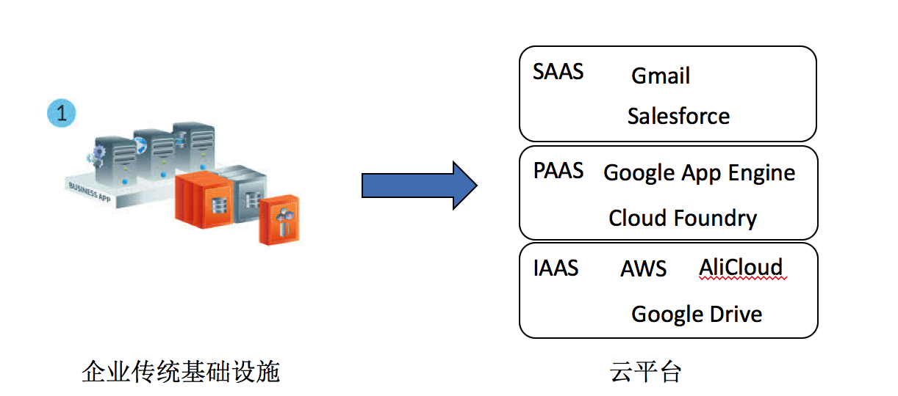
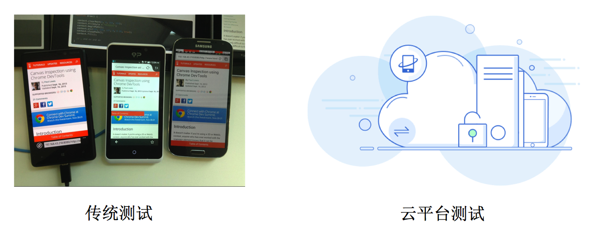
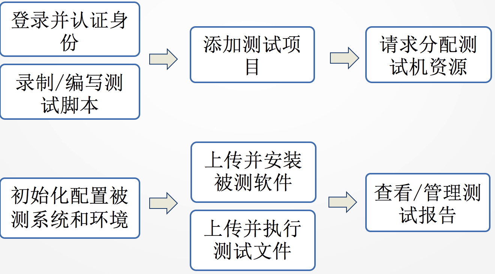

开篇前，先澄清一个内容。关于云测试的研究大体包括两个方向内容：如何确保云计算服务本身的质量以及如何更好地调用云计算的资源做测试。那么本文更主要的是讨论，如何有效利用云环境中的资源测试其他软件， 利用云计算技术解决方案进行测试的活动。
介绍云测试的适合使用场景前，先来看一下测试领域一直以来面临的一些痛点和现状。
测试的现状与痛点
测试成本高
兼容性要求更高：如今移动设备的更新换代越来越快，跨设备的兼容性测试也变得越来越复杂、耗时。然而对于用户体验质量要求在逐渐变高，需要对兼容性要求越来越高。在项目初期，公司往往需要购买大量移动设备花费大量人力来进行测试。
多台测试机系统需逐一升级：现在移动操作系统升级快，一旦要求支持不同操作系统版本要逐个升级，缺乏规模化升级的能力
测试利用率低
- 测试的硬件和软件在测试后就会闲置，利用率不高：小到每天下班后，大到项目结束后，测试设备资源使用率总体不高。
测试环境管理复杂
真实场景模拟复杂（如：弱网/WIFI）：更改系统配置类，手动测试时候，要求对不同机型足够熟悉，通知控制在哪里。
测试环境一致性：每次测试后对测试环境系统进行修改后，没有还原特殊的环境配置。造成测试环境不一致导致问题出现
云计算带给测试领域的变革
而云环境的快速发展则给测试领域带来了新的可能性。云计算的本质是一种服务提供模型，通过这种模型可以随时，随地，按需地通过网络访问共享资源池的资源。

云计算带来将虚拟化的计算资源供给用户使用的的服务方式, 原来越多的企业由传统的基础设施、服务 迁移到云平台上，SaaS、PaaS以及IaaS等服务模式不仅对软件架构设计和软件服务影响深远,还改变了软件产品的生产消费方式。开发、部署、发布，都会使用云资源。同样在测试领域也产生了一定的影响。

不再需要使用左图中的方式购买大量实体机型去做测试，而将软件测试过程迁移到云中，应用云计算平台提供的计算和存储等资源进行各种测试活动。资源自动生成、弹性分配，按需服务，联网即得的特性将大大改善我们前面提到的问题。甚至连自动化软件测试当结合云环境时候也能发挥更大的威力。
云测试平台
云测试平台是一种利用云环境的测试方法。集约化利用测试资源，规模化完成测试任务。用户可以使用浏览器来提交测试项目和测试脚本，测试云测试任务分配到云端进行执行，最后将测试结果集中展现给用户。
优点：
- 节约成本
- 服务按需付费
- 扩展性强
- 高可靠性
- 联网即得
- 加速测试
缺点：
- 平台服务及数据的安全性
- 供应商角色增加了复杂度
- 虚拟技术不固定影响性能测试
云平台测试，可以狭义的理解为Testing as a Service (TaaS)。测试服务提供商利用云计算平台给测试用户提供的第三方软件测试服务。
平台架构层次

目前该平台主要支持两种测试方式，分别是自动化测试和远程访问测试。
- 自动化测试需要上传被测应用包和测试文件包，随后云测试平台会自动运行测试，完成后得出详细测试报告，报告中包含哪些机型未通过测试，也可以查看测试历史会话和日志。

- 远程访问测试需指定待测设备，随后上传应用程序包，等待平台自动分配相应机型后远程连接设备进行交互测试，也可以查看测试历史会话和日志。

移动云测试平台
云测试平台选择：
- 选择市场上的云测试平台
- 搭建云测试平台
市场上的云测试平台选择因素：
- 供应商的选择标准？软硬件标准？安全性？
- 可以提供何种服务？
- 提供私有云，公有云还是混合云平台？
目前，市场上的云测试平台有很多，Xamarin Test Cloud、Testin云测、AWS Device Farm、Sauce Labs等等都已经凭借自己独特的优势拥有了足够的使用群体。
目前市场上有很多移动云测试平台，可让Android，IOS和Web应用同时运行在各种设备上，并与应用程序进行实时交互，可以通过网络随时、随地、按需的访问AWS提供的移动设备资源进行兼容性测试。

数据采集于2017年4月
AWS Device Farm
与其他的云测试平台相比，AWS Device Farm起步稍晚，目前支持的设备上稍少，但是在脚本测试中支持的语言和框架上发展迅速，当然该平台也是唯一支持测试FireOS设备的云测试平台。运行方式同时支持cli、console、sdk。
功能特点：
- 远程访问测试
- 脚本测试
- 并行运行测试
- 支持随机模糊测试
- 大量真实 Android 和 iOS 设备
- 运行方式支持cli、console、sdk
- 持续集成 Jenkins
- 测试报告包括测试结果、截图和录屏
- 丰富的日志记录操作
- 与CloudTrail集成
- 支持大量流行测试框架
- 可以配置更改测试机环境
- 模拟不同网络连接状态
- 性能监控和分析: CPU & RAM usage
- 设置运行超时时间
收费方式：
- 按需付费: 0.17 USD/设备分钟
- 无限制的测试与访问: 最低 250 USD/设备插槽每月
- 私有设备最低 200 USD/月
- 1000分钟免费
目前情况看来，AWS Device Farm处于技术雷达试验阶段，凭借与其他AWS服务（如AWS CloudTrail）的良好集成和服务使用方式，在云测试平台的市场份额将稳步提升，终将占据一席之地。有需要对移动设备进行兼容性测试的企业可以在风险可控的项目中尝试使用此服务平台。
Xamarin Test Cloud
Testin
云测试平台搭建 – 参考架构
云测试平台的搭建可分用户接口层、云测试项目管理层
用户接口层 用户接口层是用户访问云测试系统的入口。 用户可以通过 Web界面访问该系统，实现测试任务的提交、测试状态的查看以及测试结果的审阅。
云测试项目管理层 为测试所需要的资源进行预留和调度，哪些任务同时跑，分配哪些设备资源等。在测试任务执行时负责测试状态的监控，并在测试任务执行完毕 之后进行测试结果的分析统计。 以服务的方式封装测试资源与工具，实现测 试即服务。

借助openstack 搭建基础设施平台。我们在这一层就可以使用openstack为我们提供的框架。
云管理层 它是测试云的基础设施。云管理层根据任务管 理层的指令来选择镜像并创建虚拟机。在测试虚拟机创建成功 之后，向任务管理层报告虚拟机的网络地址。在测试任务结束 后销毁虚拟机。动态分配和管理公共云或私有云的 各种虚拟资源。
物理资源层它主要为测试提供资源，如内存、硬盘、CPU等。该层资源需要支持虚拟化，采用的技术有 XEN/KVM等。